最初时，会发4张牌，以闲家-庄家-闲家-庄家的顺序各发2张。
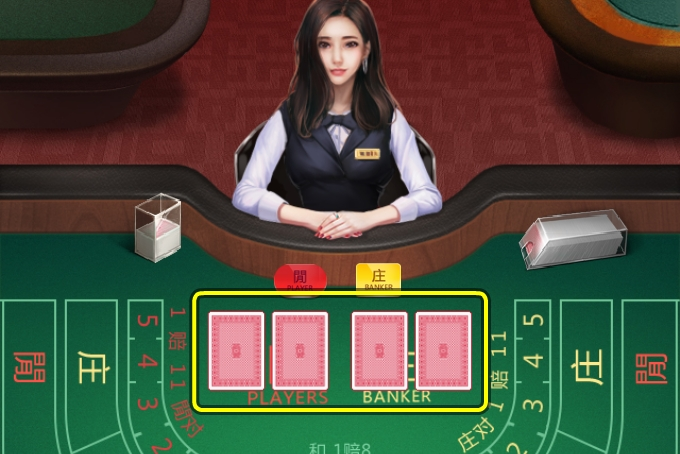
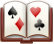 每个玩家可以选择在闲家(Player)或庄家(Banker)的任何一方下注，并且点数总和接近9的一方为胜。所有下注的获胜方都将获得1比1的赔彩，但由于庄家有着更好的获胜几率，因此庄家获胜时，会收取5%的手续费。
2至9的所有纸牌点数都按标识的数字计算，而纸牌A的点数计算为1，纸牌10与图片纸牌的点数计算为0。
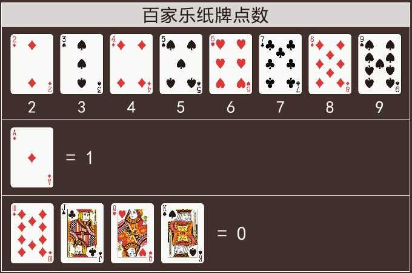
同理，所有纸牌的总和为10时，将计算为0。
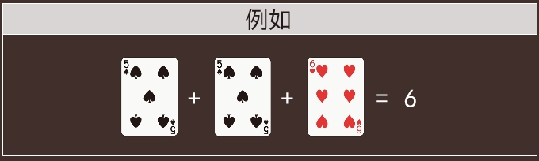
除了在闲家或庄家下注方式外，还有其他的下注方式，如：
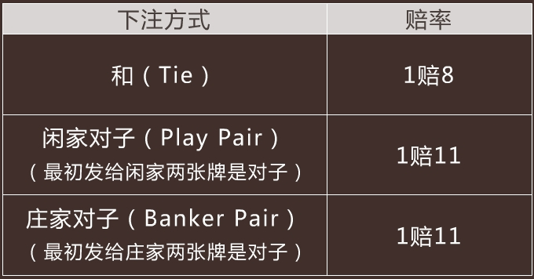
最初发牌结束后，荷官会根据当前点数总和的情况，判断是否追加发牌。
闲家的规则
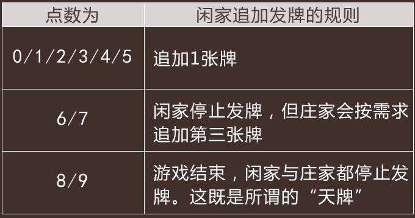
庄家的规则
如果闲家停止发牌（假设他的点数总和为6或7），庄家的追加发牌只取决于自己纸牌的点数，并以与闲家相同的规则进行追加发牌（0至5时，追加发牌；6或7时，停止发牌）。
如果闲家追加了第三张牌，庄家则会根据如下规则进行追加发牌：
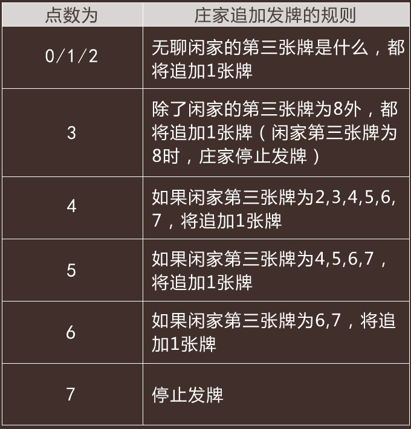
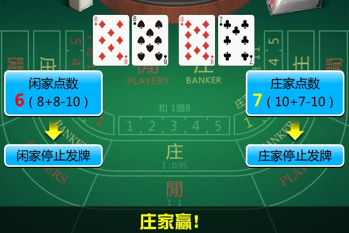
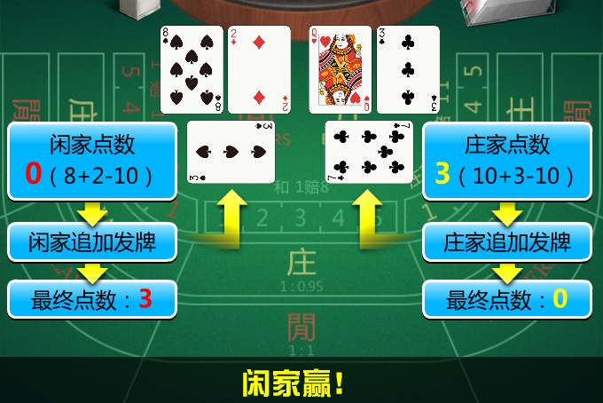
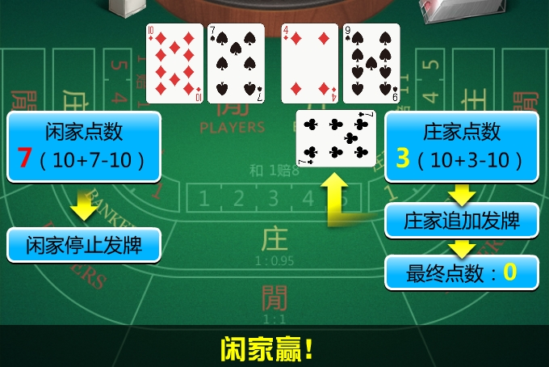
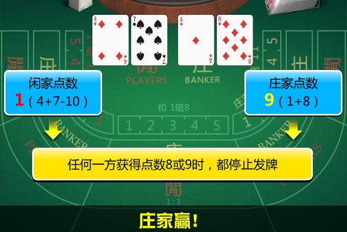
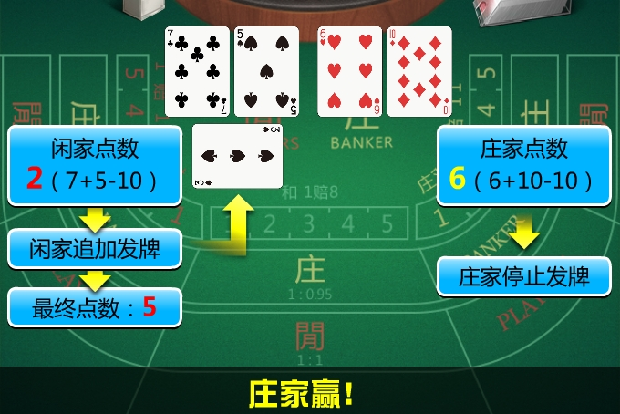